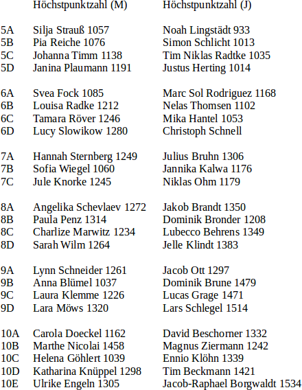
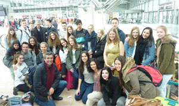

Vollversammlung des Vereins der Freunde
Der Verein der Freund lädt zur Vollversammlung ein. Alle weiteren Informationen zur Veranstaltung finden Sie im Leibniz-Kalender.
Der Verein der Freund lädt zur Vollversammlung ein. Alle weiteren Informationen zur Veranstaltung finden Sie im Leibniz-Kalender.
Unser Bistro nimmt ab Montag, dem 07. September, wieder sein Arbeit auf. Wir freuen uns auf rege Nachfrage.
Das Bistro-Team
Unter dem Menüpunkt "Termine & Pläne" finden sich jetzt die Stundenpläne für das aktuelle 1. Halbjahr des Schuljahres 2015/16. Die Stundenpläne sind mit Hilfe des Leibniz-Passwortes einsehbar.
 Die Stundenpläne und Klassenzusammensetzungen für das kommende Schulhalbjahr sind am Donnerstag, 27.08., und Freitag, 28.08., in der Pausenhalle in der Zeit von 7:30 Uhr bis 11:30 Uhr einsehbar. Sobald die Stundenpläne digital vorliegen, werden diese auch auf der Homepage veröffentlicht.
Die Stundenpläne und Klassenzusammensetzungen für das kommende Schulhalbjahr sind am Donnerstag, 27.08., und Freitag, 28.08., in der Pausenhalle in der Zeit von 7:30 Uhr bis 11:30 Uhr einsehbar. Sobald die Stundenpläne digital vorliegen, werden diese auch auf der Homepage veröffentlicht.
 Liebe Schülerinnen und Schüler der neuen 5. Klassen, liebe Eltern,
Liebe Schülerinnen und Schüler der neuen 5. Klassen, liebe Eltern,
wir begrüßen Euch/Sie herzlich zur Einschulungsveranstaltung des Leibniz-Gymnasiums am Dienstag, dem 01. September 2015, um 17:00 Uhr in der Pausenhalle unserer Schule.
Nach einer feierlichen Begrüßung und der Einteilung der Klassen gibt es ein erstes Kennenlernen im neuen Klassenraum. Währenddessen sind die Eltern zu Kaffee und Kuchen in unserer neuen Cafeteria eingeladen. Anschließend besteht auch für die Eltern die Möglichkeit, sich den Klassenraum Ihrer Kinder anzuschauen.
Von Mittwoch bis Freitag wird jeweils von der 1. - 4. Stunde das Kennenlernen der Schule und der neuen Klassenkameraden sowie der respektvolle Umgang miteinander im Mittelpunkt des Unterrichts stehen, der von den Klassenleitern, den Patenschülern und den Lerncoaches aus dem 13. Jahrgang gestaltet wird. In den anschließenden Stunden ist Unterricht nach Plan.
Wir wünschen Euch einen guten Start und eine schöne Schulzeit am Leibniz-Gymnasium!
B. Jaecks, Orientierungsstufenleiterin
Am Montag, dem 6. Juli, besuchten die beiden Physik-Profil-Kurse des Q1-Jahrgangs das DESY in Hamburg. Das Deutsche Elektronen-Synchrotron betreibt mehrere Teilchenbeschleuniger, die sich teilweise kilometerweit unter der Stadt Hamburg erstrecken. Hier werden Elementarteilchen mit hohen Energien beschleunigt und zur Kollision gebracht, um deren Spaltprodukte zu untersuchen. Zudem wird die von den beschleunigten Teilchen ausgesandte Synchrotonstrahlung für Experimente verwendet.


Nach einer einführenden Vorlesung erhielten wir eine Führung zu verschiedenen Forschungsstätten. Sowohl an Ausstellungsstücken als auch direkt an den aktuell durchgeführten Experimenten wurde uns die Arbeitsweise am DESY näher gebracht. Wir erlebten über drei Stunden voller Eindrücke und Informationen.
S. Nocon
Am 2. Juli veranstaltete das GAM bei herrlichem Sonnenschein am Kurparksee nach schottischem Vorbild einen Gaudi-Wettkampf aus 10 Disziplinen für Mädchen und Jungen.


Dabei ging es mehr um das soziale Ereignis und den Spaß an gemeinsamen Spielen. Unter den Zuschauern wurden auch viele Ehemalige gesichtet, die sich die - für Zuschauer - attraktiven Wettkämpfe nicht entgehen lassen wollten.
R. Dunker
Am Mittwoch, dem 17.06.2015, fanden am Leibniz-Gymnasium die Bundesjugenspiele statt. Bei stark wechselnden Wetterbedingungen gingen die Klassen 5 - 10 an den Start. Gegen 13 Uhr standen die Ergebnisse fest. Wir gratulieren den Schulsiegern Jacob-Raphael Borgwaldt aus der 10E mit 1534 Punkten und Marthe Nicolai aus der 10B mit 1458 Punkten.

R. Dunker und die Sportfachschaft
Wir, die Klasse 5C, trafen uns am Morgen des 10. Junis am Bahnhof und fuhren zusammen mit Herrn Tappe und Frau Stenman nach Neustadt in das Museum ZeiTTor. Uns wurden viele Dinge beigebracht, wie z. B. Feuer machen oder Getreide mahlen, und wir haben viel über das Leben der Steinzeitmenschen gelernt.


Es hat der Klasse viel Spaß gemacht. Wir bedanken uns ganz herzlich bei Herrn Tappe und Frau Stenman, dass sie diesen Ausflug ermöglicht haben.
Lilli B, Klasse 5C
Schon zum zweiten Mal konnte das Leibniz-Gymnasium eine Schülergruppe des Instituto Pompeu Fabra de Martorell in Bad Schwartau begrüßen.
Am 6. Mai 2015 kamen am Nachmittag 18 spanische Schülerinnen und Schüler sowie zwei Lehrer in Hamburg am Flughafen an. Die aus Martorell bei Barcelona stammenden Zehntklässler blieben fünf Tage bei ihren Austauschschülern und sollten Lübeck, Scharbeutz, Hamburg und natürlich auch das Leibniz-Gymnasium zu sehen bekommen. Die Ausflüge fanden glücklicherweise bei gutem Wetter statt. Die Spanier genossen den Aufenthalt hier sehr.
Der Gegenbesuch in Spanien wird Anfang November stattfinden. Die Schülerinnen und Schüler freuen sich schon, einander wiederzusehen und Barcelona kennenzulernen.
Frau Westphal, D. Beschorner
In Jerusalem weckt der liebe Gott. In unsere Träume mischt sich morgens um 4.00 Uhr der Ruf des Muezzins und gegen 6.00 Uhr scheppern die Glocken der Grabeskirche,.dann sehen wir im strahlenden Sonnenschein die frommen Juden zur Klagemauer eilen, die ca. acht Minuten von unserer Unterkunft entfernt liegt.Der Blick noch vor dem Frühstück von unserer Dachterrasse ist überwältigend. Direkt gegenüber der Altstadt gelegen, überblicken wir ein Panorama, in dessen Mittelpunkt der Felsendom mit der goldenen Kuppel, das berühmte Wahrzeichen Jerusalems, liegt. Vier Tage können wir diesen Blick genießen, wenn das Programm unserer Reise, das uns ein Pensum von vier Wochen in zwölf Tagen absolvieren lässt, Zeit dazu gibt.


Vier Tage genießen wir Jerusalem bei meist strahlender Sonne und sommerlichen Temperaturen. Wir besuchen die Gedenkstätte Yad Vashem und setzen uns dort mit dem Holocaust auseinander. Weitere Stationen sind die Altstadt von Jerusalem mit Klagemauer und Grabeskirche,eine Wanderung auf dem „Jesus Trail“ und Ma'agan an der Südspitze des Sees Genezareth. Wir erleben einen Synagogengottesdienst in Tel Aviv, der uns mit seiner Lebendigkeit beeindruckt, wir treffen palästinensische Schülerinnen und jüdische Schüler, die uns mit großer Offenheit begegnen, wir sprechen mit Menschen, die den Holocaust überlebt haben. Wir haben Gespräche mit den Israelkorrespondenten der Frankfurter Rundschau, der Süddeutschen Zeitung und der ARD, denen wir viele Fragen stellen können, und durchfahren die Negevwüste
bei annähernd 50°. Und das ist nur ein kleiner Ausschnitt aus unserem Programm.
Es ist uns in Israel gelungen, uns in Schwämme zu verwandeln, die in der Lage waren, alles aufzusaugen, z.B. den Tag, der um 9.00 Uhr mit Peter Münch von der Süddeutschen Zeitung begann und abends nach drei weiteren Stationen mit einer intensiven Gesprächsrunde endete. In unseren Poren sitzen tief die Eindrücke, die erst im Laufe der Zeit verarbeitet werden können.
Nicht nur für die 33 Schülerinnen und Schüler – davon 11 vom Leibniz-Gymnasium -, sondern auch für die sie begleitenden Lehrkräfte war es eine ungemein intensive und sehr bereichernde Reise.
A. Frank
 Liebe Eltern!
Liebe Eltern!
Wie jedes Jahr beteiligt sich das Leibniz-Gymnasium unter Federführung der SV am Sozialen Tag. Die Schülerinnen und Schüler haben von der SV und ihren Klassenlehrerinnen und Klassenlehrern schon die Informationen erhalten, die ich Ihnen an dieser Stelle geben möchte. Es gelten unterschiedliche Reglungen, nach zwei Altersstufen getrennt.
Im Erlass (MSB vom 17.02.2015) heißt es für die Jüngeren: "Schülerinnen und Schüler, die das 13. Lebensjahr noch nicht vollendet haben, dürfen im Rahmen des Sozialen Tages nur Tätigkeiten im schulischen oder familiären Bereich ausüben. Die Tätigkeit darf höchstens für zwei Zeitstunden ausgeübt werden. Schülerinnen und Schüler, die das 13. Lebensjahr, aber nicht das 14. Lebensjahr vollendet haben, dürfen ihre Tätigkeit höchstens für drei Zeitstunden ausüben. Bei Gruppentätigkeiten im Klassen- oder Lerngruppenverband unter schulischer Leitung kann die Höchstdauer der Tätigkeit von zwei oder drei Zeitstunden überschritten werden."
Vor diesem Hintergrund wurde mit der SV vereinbart, dass in den Stunden 1 – 4 Unterricht für die Klassen 5 – 7 stattfindet. Danach werden die Schülerinnen und Schüler für ihre Tätigkeit freigestellt. Für Schülerinnen und Schüler, die im schulischen Bereich arbeiten wollen, stehen begrenzt Plätze zur Verfügung (Koordination Herr Graf mit der SV).
Sollten schon andere Vereinbarungen mit den Eltern getroffen worden sein, können diese vom Klassenlehrer / von der Klassenlehrerin als Ausnahme genehmigt werden.
Für alle anderen Schülerinnen und Schüler gilt in diesem Jahr neu: "Bei Tätigkeiten, die nicht im schulischen oder familiären Bereich erfolgen, hat die Schülerin oder der Schüler rechtzeitig eine Mitteilung über ihren oder seinen Einsatz am Sozialen Tag vorzulegen."
Wer am Sozialen Tag teilnimmt, weist dieses also mit der Tätigkeitsvereinbarung nach (an den Klassenlehrer bis zum 3. Juli 2015). Diese muss von den Eltern unterschrieben sein.
Ich wünsche mir sehr, dass trotz des Aufwandes bei der Vorbereitung eine hohe Beteiligung am Sozialen Tag zustande kommt.
Mit freundlichen Grüßen
H.J. Werner
Am 08. Mai 2015 fand wieder die Musikveranstaltung "Leibniz rockt" statt. Die Bilder dokumentieren das Ereignis, an dem vier Bands teilnahmen.


Nach guter Vorbereitung mit Skigymnastik an den sieben letzten Samstagen vor der Abreise machten sich 49 Schüler/-innen aus den Jahrgängen 8 bis 13 und fünf Begleiter am Freitag Nachmittag mit dem Reisebus auf den Weg nach Österreich. Zum zweiten Mal hieß das Ziel: Mölltaler Gletscher bei Flattach (Kärnten). Die Unterkunft befand sich auf 2800m Höhe im Keller des Restaurants Eissee.
Bei überwiegend sonnigem Wetter, sogar auch mal Neuschnee und bester Stimmung, wurden vormittags sechs Skikurse in den unterschiedlichen Leistungsklassen abgehalten und die Nachmittage bis 16:30 Uhr standen für die Verbesserung der Skitechnik in Gruppen von mindestens drei Personen zur Verfügung. Die Verpflegung war mehr als ausreichend. Das Frühstück und das Abendessen (warm) wurde unten in unserem Speise- und Aufenthaltraum eingenommen. Mittags trafen wir uns oben im Restaurant oder auf der Sonnenterasse.
Es blieb dann am Nachmittag genügend Zeit zur Erholung, zum Tischtennis spielen; man konnte auch gewissen Gitarrenklängen lauschen. Die Abende wurden genutzt, um die Videos, die beim Skilaufen gemacht wurden, zu betrachten und auszuwerten, um den Fahrstil zu verbessern.


Der obligatorische "Bunte Abend", bei dem sechs von der Jury zusammengestellte Gruppen ihre Ergebnisse zu den Fragen und Aufgaben präsentierten, war wieder ein Höhepunkt der Reise. Zur Punktevergabe gehörten auch noch verschiedene Wettbewerbe, die schon mittags auf dem Ski ausgetragen wurden.
Regelmäßig bekamen wir Besuch vom Schneefuchs, der sich abends vor den Fenstern zeigte, um noch das eine oder andere Käsebrot entgegen zu nehmen ("What Does The Fox Say?").
Auf Initiative einiger Oberstufenschüler wagte eine kleine Gruppe den morgendlichen Aufstieg zum Gipfel (3200 m) mit Steigfellen oder Schneeschuhen, um den Sonnenaufgang zu beobachten. Selbst organisiert und motiviert hieß es um 4;00 Uhr aufzustehen (LOB).
Insgesamt eine gelungene, stressfreie Fahrt mit einer zuverlässigen Gruppe von Schüler/-innen. Sowohl bei den Fortgeschnittenen, als auch besonders bei den Anfängern wurden zu erkennende Fortschritte erzielt. Eine "Runde Sache" und deshalb noch mal ein LOB an ALLE.
M. Rehbein und H.-P. Jahnke-Wandschneider
Unter dem Menüpunkt "Termine & Pläne" finden sich jetzt die aktualisierten Stundenpläne für das aktuelle 2. Halbjahr des Schuljahres 2014/15. Die Stundenpläne sind mit Hilfe des Leibniz-Passwortes einsehbar.